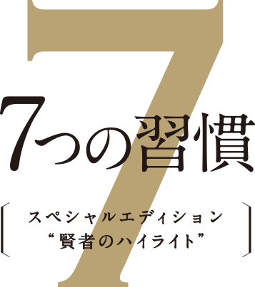
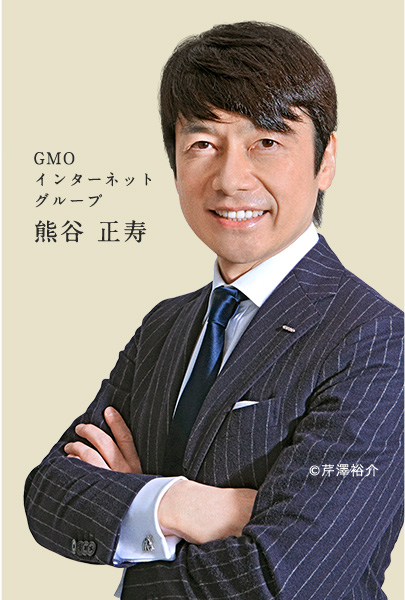 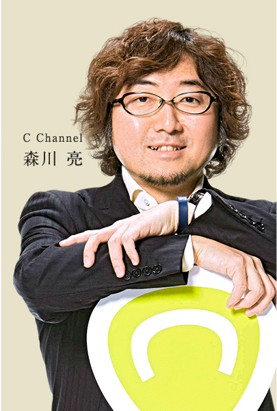 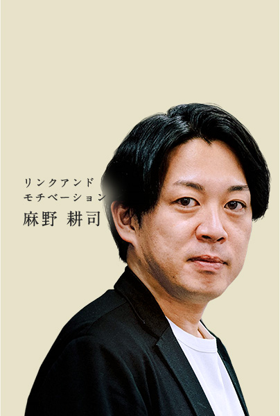 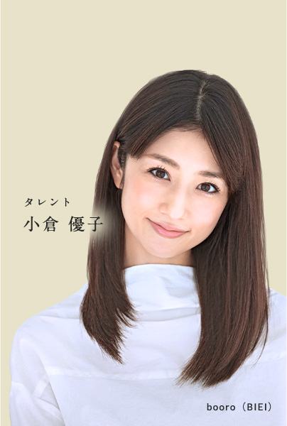 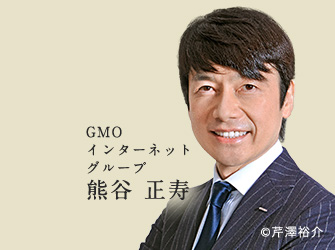 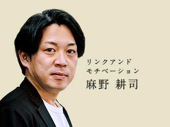
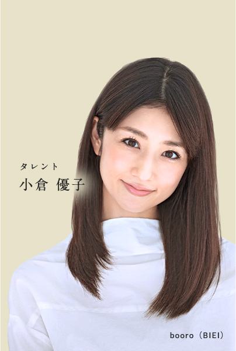 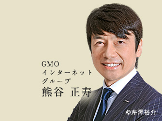 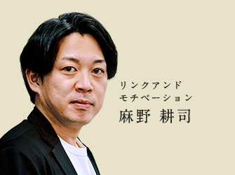 
Scroll
現代も読み継がれる原理原則－『7つの習慣』とは。
7つの習慣は、アメリカ建国200年を機に、スティーブン・R・コヴィー博士が、
これまでの偉人賢人等、いわゆる成功したといわれる人たちの共通点を研究し、
⻑期的・継続的に好ましい結果を⼿に⼊れるために必要な習慣をまとめたものです。
「成功のための原理原則」を生活に取り⼊れ、実践するためのレッスン書です。
現代も読み継がれる原理原則
－『7つの習慣』とは。
7つの習慣は、アメリカ建国200年を機に、ステ
ィーブン・R・コヴィー博士が、これまでの偉人
賢人等、いわゆる成功したといわれる人たちの
共通点を研究し、⻑期的・継続的に好ましい結
果を⼿に⼊れるために必要な習慣をまとめたも
のです。
「成功のための原理原則」を生活に取り⼊れ、
実践するためのレッスン書です。
賢者のハイライト とは？
全世界３０００万部売上をほこる、ビジネス書の金字塔『７つの習慣』。
そんな本書を、時代をリードする７人の賢者は、いかに読み解くのか？〝賢者のハイライト〟では、賢者直筆のハイライト、実際のメモや言葉をそのまま掲載することで、その思考の足跡を読者が追体験できるようにしました。混迷を極める現代社会だからこそ求められる「ブレない人生の軸」を獲得するための必読書です。
7 人 の 賢 者 か ら の
メ ッ セ ー ジ
-
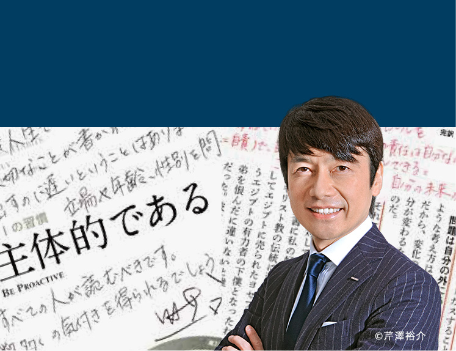
GMOインターネット株式会社
代表取締役会長兼社長・グループ代表
熊谷 正寿 / Masatoshi Kumagai
ハイライト Ver［第１の習慣担当］
他責ではなく自責
素晴らしい人生はそこから始まるVIEW DETAIL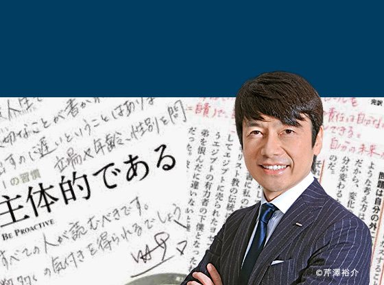他責ではなく自責
素晴らしい人生はそこから始まる
ハイライト Ver［第１の習慣担当］
熊谷 正寿 Masatoshi Kumagai -
認定NPO法人 マギーズ東京 共同代表理事
鈴木 美穂 / Miho Suzuki
ハイライト Ver［第２の習慣担当］
「最後かもしれない」と思うと
この世界が愛おしくなるVIEW DETAIL「最後かもしれない」と思うと
この世界が愛おしくなる
ハイライト Ver［第２の習慣担当］
鈴木 美穂 Miho Suzuki -
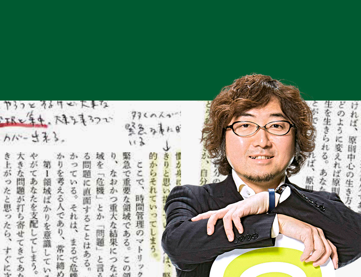
C Channel 株式会社取締役代表
森川 亮 / Akira Morikawa
ハイライト Ver［第３の習慣担当］
原則×良心＝誠実さ
信頼できる人と
みんな時間を使いたいVIEW DETAIL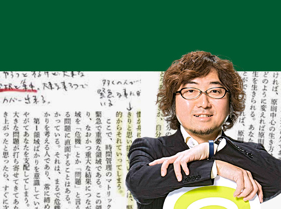原則×良心＝誠実さ
信頼できる人とみんな時間を使いたい
ハイライト Ver［第３の習慣担当］
森川 亮 Akira Morikawa -
モテクリエイター
ゆうこす（菅本裕子） / Yukos
ハイライト Ver［第４の習慣担当］
モテ！！これぞモテ！！
成熟とはモテだったのか…VIEW DETAILモテ！！これぞモテ！！
成熟とはモテだったのか…
ハイライト Ver［第４の習慣担当］
ゆうこす（菅本裕子） Yukos -
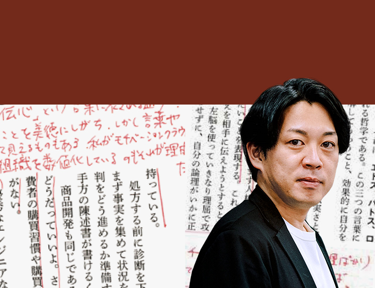
株式会社リンクアンドモチベーション取締役
麻野 耕司 / Koji Asano
ハイライト Ver［第５の習慣担当］
『７つの習慣』は、
私のそして私のチームの運命を
間違いなく変えてくれたVIEW DETAIL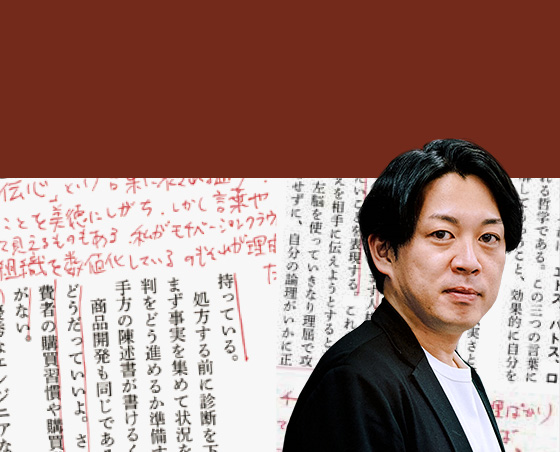『７つの習慣』は、
私のそして私のチームの運命を
間違いなく変えてくれた
ハイライト Ver［第５の習慣担当］
麻野 耕司 Koji Asano -

ドラゴン桜
弁護士・龍山高校理事
桜木 建二 / Kenji Sakuragi
ハイライト Ver［第６の習慣担当］
『７つの習慣』を身につける方が、
東大へ行くよりもずっと難しい
しかし、『７つの習慣』を
身につけた人は、
必ず社会で何かを成し遂げるVIEW DETAIL
『７つの習慣』を身につける方が、
東大へ行くよりもずっと難しい
しかし、『７つの習慣』を身につけた人は、必ず社会で何かを成し遂げる
ハイライト Ver［第６の習慣担当］
桜木 建二 Kenji Sakuragi -
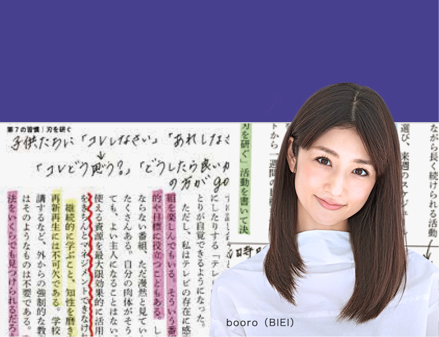
タレント
小倉 優子 / Yuuko Ogura
ハイライト Ver［第７の習慣担当］
人生は競争の場所ではない
協力の場である！！VIEW DETAIL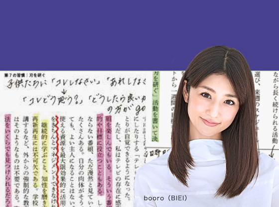人生は競争の場所ではない
協力の場である！！
ハイライト Ver［第７の習慣担当］
小倉 優子 Yuuko Ogura
最新情報
『７つの習慣 スペシャルエディション“ 賢者のハイライト”』ーGMO熊谷社長,小倉優子,『ドラゴン桜』桜木先生ら７賢者が読み解く。本人直筆のハイライト・メモを付録した『７つの習慣』を、各1万部ずつ限定で10/3より全国の書店で発売します。 #７つの習慣 #賢者のハイライト